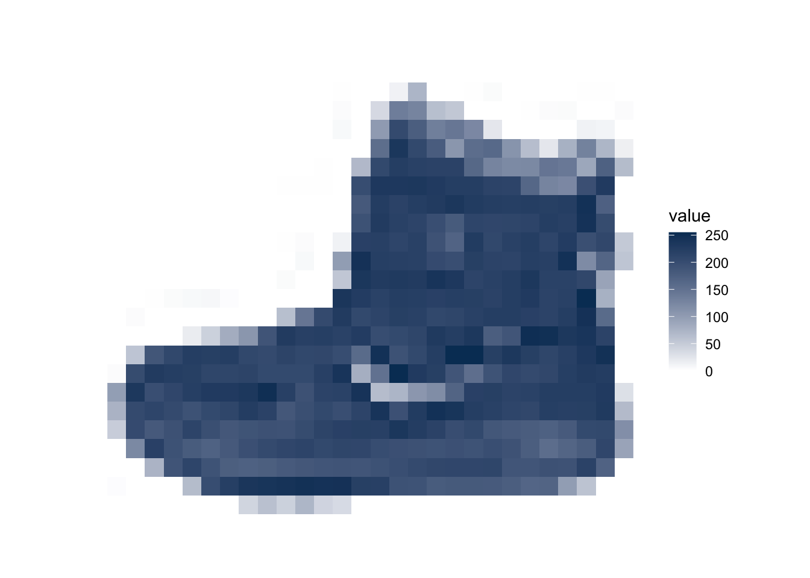
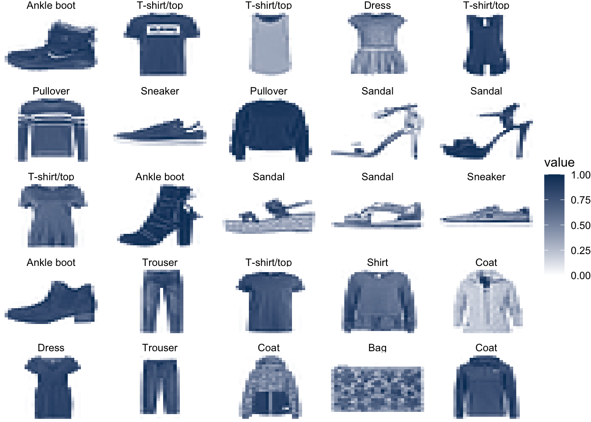
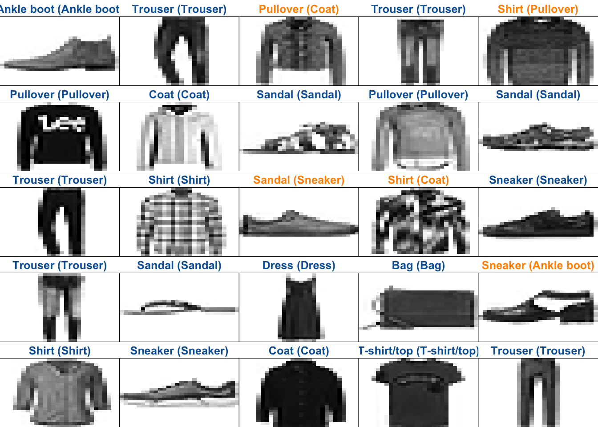

install.packages("reticulate")
remotes::install_github("rstudio/tensorflow")
install.packages("keras")Keras and Neural Networks
Installation
Attribution: this Lab derives mainly from a Vignette in the R Keras package under the MIT License.
This proved to be more challenging than I anticipated…
My setup:
- MacOS M1 Processor
- R/Rstudio 4.3+
Then, if not already installed, you’ll need 2 R packages
Now make sure that python is installed on your system. If it isn’t (or if you haven’t used it in a while, or if it’s somewhere R can’t find) this may take a while.
reticulate::install_python()Now restart R before proceeding.
Finally, install the python keras package (which also installs tensorflow and some other things).
keras::install_keras()Restart R again.
── Attaching core tidyverse packages ──────────────────────── tidyverse 2.0.0 ──
✔ dplyr 1.1.3 ✔ readr 2.1.4
✔ forcats 1.0.0 ✔ stringr 1.5.0
✔ ggplot2 3.4.3 ✔ tibble 3.2.1
✔ lubridate 1.9.2 ✔ tidyr 1.3.0
✔ purrr 1.0.2
── Conflicts ────────────────────────────────────────── tidyverse_conflicts() ──
✖ dplyr::filter() masks stats::filter()
✖ dplyr::lag() masks stats::lag()
ℹ Use the conflicted package (<http://conflicted.r-lib.org/>) to force all conflicts to become errorsThoughts on R vs. Python
I’m doing this in R because it’s easier to walk through an R notebook than a Jupyter notebook (for me).
Most deep learning infrastructure is written in Python. So everything here is running python under the hood.
Once configured, it doesn’t matter which you use: do what you’re comfortable with.
There’s nothing special about Python (nor R). Consider this quote from Yann LeCun, head of AI at Facebook and one of the three fathers of deep learning (posted on Facebook on 26 October 2020):
Overview
In this guide, we will train a neural network model to classify images of clothing, like sneakers and shirts.
This guide uses the Fashion MNIST dataset which contains 70,000 grayscale images in 10 categories. The images show individual articles of clothing at low resolution (28 by 28 pixels), as seen here:

Fashion MNIST is intended as a drop-in replacement for the classic MNIST dataset. The MNIST dataset contains images of handwritten digits (0, 1, 2, etc) in an identical format to the articles of clothing we’ll use here. The original MNIST was curated by Yann LeCun, and he maintained a database of performance results for many years.
Here, we use Fashion MNIST for variety, and because it’s a slightly more challenging problem than regular MNIST. Both datasets are relatively small and are used to verify that an algorithm works as expected. They’re good starting points to test and debug code.
We will use 60,000 images to train the network and 10,000 images to evaluate how accurately the network learned to classify images. You can access the Fashion MNIST directly from Keras.
fashion_mnist <- dataset_fashion_mnist()
c(train_images, train_labels) %<-% fashion_mnist$train
c(test_images, test_labels) %<-% fashion_mnist$testAt this point we have four arrays: The train_images and train_labels arrays are the training set — the data the model uses to learn. The model is tested against the test set: the test_images, and test_labels arrays.
The images each are 28 x 28 arrays, with pixel values ranging between 0 and 255. The labels are arrays of integers, ranging from 0 to 9. These correspond to the class of clothing the image represents:
| Digit | Class |
|---|---|
| 0 | T-shirt/top |
| 1 | Trouser |
| 2 | Pullover |
| 3 | Dress |
| 4 | Coat |
| 5 | Sandal |
| 6 | Shirt |
| 7 | Sneaker |
| 8 | Bag |
| 9 | Ankle boot |
Each image is mapped to a single label. Since the class names are not included with the dataset, we’ll store them in a vector to use later when plotting the images.
class_names <- c(
"T-shirt/top",
"Trouser",
"Pullover",
"Dress",
"Coat",
"Sandal",
"Shirt",
"Sneaker",
"Bag",
"Ankle boot"
)Explore the data
Let’s explore the format of the dataset before training the model. The following shows there are 60,000 images in the training set, with each image represented as 28 x 28 pixels:
dim(train_images)[1] 60000 28 28Likewise, there are 60,000 labels in the training set:
dim(train_labels)[1] 60000Each label is an integer between 0 and 9:
train_labels[1:20] [1] 9 0 0 3 0 2 7 2 5 5 0 9 5 5 7 9 1 0 6 4There are 10,000 images in the test set. Again, each image is represented as 28 x 28 pixels:
dim(test_images)[1] 10000 28 28And the test set contains 10,000 images labels:
dim(test_labels)[1] 10000Preprocess the data
The data should be preprocessed before training the network. If you inspect the first image in the training set, you will see that the pixel values fall in the range of 0 to 255:
image1 <- as.data.frame(train_images[1, , ])
colnames(image1) <- seq_len(ncol(image1))
image1$y <- seq_len(nrow(image1))
image1 <- pivot_longer(image1, -y, names_to = "x")
image1$x <- as.integer(image1$x)
ggplot(image1, aes(x, y, fill = value)) +
geom_raster() +
scale_fill_gradient(low = "white", high = "#053b64", na.value = NA) +
scale_y_reverse() +
theme_void() +
theme(aspect.ratio = 1)
We scale these values to a range of 0 to 1 before feeding to the neural network model. For this, we simply divide by 255. The main implications here are for starting values, learning rate, and regularization. The defaults like inputs in [0, 1].
It’s important that the training set and the testing set are preprocessed in the same way:
train_images <- train_images / 255
test_images <- test_images / 255Display the first 25 images from the training set and display the class name above each image.
Verify that the data is in the correct format and we’re ready to build and train the network.
sample_clothes <- map(1:25, ~ expand_grid(x = 1:28, y = 1:28)) |>
list_rbind(names_to = "idx")
imgs <- train_images[1:25, , ]
imgs <- apply(imgs, 1, c)
cn <- class_names[train_labels[1:25] + 1]
names(cn) <- 1:25
sample_clothes$value <- c(imgs)
rm(imgs)
ggplot(sample_clothes, aes(x, y, fill = value)) +
geom_raster() +
scale_fill_gradient(low = "white", high = "#053b64", na.value = NA) +
scale_y_reverse() +
theme_void() +
facet_wrap(~idx, nrow = 5, ncol = 5, labeller = labeller(idx = cn)) +
theme()
Build the model
Building the neural network requires configuring the layers of the model, then compiling the model.
Setup the layers
The basic building block of a neural network is the layer. Layers extract representations from the data fed into them. And, hopefully, these representations are more meaningful for the problem at hand.
Most of deep learning consists of chaining together simple layers. Most layers, like layer_dense(), have parameters that are learned during training.
model <- keras_model_sequential()
model |>
layer_flatten(input_shape = c(28, 28)) %>% # input
layer_dense(units = 128, activation = "relu") %>% # hidden layer
layer_dense(units = 10, activation = "softmax") # output classThe first layer in this network, layer_flatten(), transforms the format of the images from a 2d-array (of 28 by 28 pixels), to a 1d-array of 28 * 28 = 784 pixels. Think of this layer as unstacking rows of pixels in the image and lining them up. This layer has no parameters to learn; it only reformats the data.
After the pixels are flattened, the network consists of a sequence of two ‘dense’ layers. These are densely-connected, or fully-connected, neural layers. The first dense layer has 128 nodes (or neurons). The second (and last) layer is a 10-node softmax layer—this returns an array of 10 probability scores that sum to 1. Each node contains a score that indicates the probability that the current image belongs to one of the 10 digit classes.
Compile the model
Before the model is ready for training, it needs a few more settings. These are added during the model’s compile step:
- Loss function: This measures how accurate the model is during training. We want to minimize this function to “steer” the model in the right direction.
- Optimizer: This is how the model is updated based on the data it sees and its loss function.
- Metrics: Used to monitor the training and testing steps. The following example uses accuracy, the fraction of the images that are correctly classified.
model |> compile(
optimizer = "adam",
loss = "sparse_categorical_crossentropy",
metrics = c("accuracy")
)Train the model
Training the neural network model requires the following steps:
- Feed the training data to the model — in this example, the
train_imagesandtrain_labelsarrays. - The model learns to associate images and labels.
- We ask the model to make predictions about a test set — in this example, the
test_imagesarray. We verify that the predictions match the labels from thetest_labelsarray.
To start training, call the fit() method — the model is “fit” to the training data (takes about a minute):
model |> fit(train_images, train_labels, epochs = 5)Epoch 1/5
1875/1875 - 9s - loss: 0.5468 - accuracy: 0.8102 - 9s/epoch - 5ms/step
Epoch 2/5
1875/1875 - 8s - loss: 0.4775 - accuracy: 0.8356 - 8s/epoch - 4ms/step
Epoch 3/5
1875/1875 - 8s - loss: 0.4722 - accuracy: 0.8370 - 8s/epoch - 4ms/step
Epoch 4/5
1875/1875 - 9s - loss: 0.4732 - accuracy: 0.8406 - 9s/epoch - 5ms/step
Epoch 5/5
1875/1875 - 9s - loss: 0.4783 - accuracy: 0.8379 - 9s/epoch - 5ms/steptrain_score <- model |> evaluate(train_images, train_labels, verbose = 0)
train_score loss accuracy
0.4885503 0.8282500 As the model trains, the loss and accuracy metrics are displayed. This model reaches an accuracy of about 83% on the training data.
Evaluate accuracy
Next, compare how the model performs on the test dataset:
test_score <- model |> evaluate(test_images, test_labels, verbose = 0)
test_score loss accuracy
0.5505691 0.8124000 It turns out, the accuracy on the test data set is a little less than the accuracy on the training dataset.
Make predictions
With the model trained, we can use it to make predictions about some images.
predictions <- model |> predict(test_images)313/313 - 1s - 514ms/epoch - 2ms/stepHere, the model has predicted the label for each image in the testing set. Let’s take a look at the first prediction:
round(predictions[1, ], 3) [1] 0.000 0.000 0.000 0.000 0.000 0.035 0.000 0.027 0.000 0.938A prediction is an array of 10 numbers. These are the posterior probabilities for each of the 10 different articles of clothing. We can see which label has the highest confidence value:
which.max(predictions[1, ])[1] 10Alternatively, we can also directly get the class prediction:
class_pred <- model |>
predict(test_images) |>
k_argmax()313/313 - 0s - 453ms/epoch - 1ms/stepas.vector(class_pred[1:20]) [1] 9 2 1 1 6 1 4 6 5 7 2 5 5 3 4 1 2 6 8 0As the labels are 0-based, this actually means a predicted label of 9 would correspond to the label found in class_names[10]. So the model is most confident that this image is an ankle boot. And we can check the test label to see this is correct:
test_labels[1][1] 9Let’s plot several images with their predictions. Correct prediction labels are blue and incorrect prediction labels are orange
par(mfcol = c(5, 5))
par(mar = c(0, 0, 1.5, 0), xaxs = "i", yaxs = "i")
for (i in 1:25) {
img <- test_images[i, , ]
img <- t(apply(img, 2, rev))
# subtract 1 as labels go from 0 to 9
predicted_label <- which.max(predictions[i, ]) - 1
true_label <- test_labels[i]
color <- ifelse(predicted_label == true_label, "#0b62a4", "#ff9200")
image(1:28, 1:28, img,
col = gray((255:0) / 255),
xaxt = "n", yaxt = "n",
main = paste0(
class_names[predicted_label + 1], " (",
class_names[true_label + 1], ")"
),
col.main = color
)
}
What about random forests?
What if we just did random forests instead? Takes a good bit less effort.
library(ranger) # faster version of randomForests
train_images <- t(apply(train_images, 1, c)) # flatten
test_images <- t(apply(test_images, 1, c))
train_images <- cbind(train_labels, train_images) |> as_tibble()Warning: The `x` argument of `as_tibble.matrix()` must have unique column names if
`.name_repair` is omitted as of tibble 2.0.0.
ℹ Using compatibility `.name_repair`.test_images <- cbind(test_labels, test_images) |> as_tibble()
names(train_images) <- c("cl", paste0("x", 1:(ncol(train_images) - 1)))
names(test_images) <- names(train_images)
train_images$cl <- as.factor(train_images$cl)
test_images$cl <- as.factor(test_images$cl)
rf <- ranger(cl ~ ., data = train_images, num.trees = 100)
preds <- predict(rf, data = test_images)The Test Set accuracy from Random Forests is 88%.
Slightly better than the Neural Net for my run, but reasonably close.